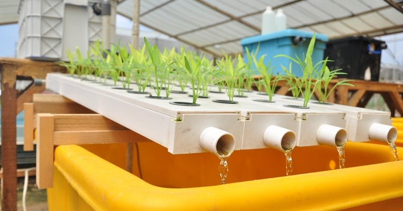
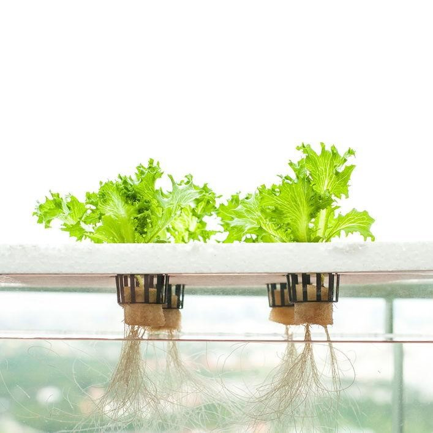
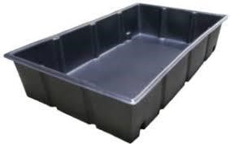
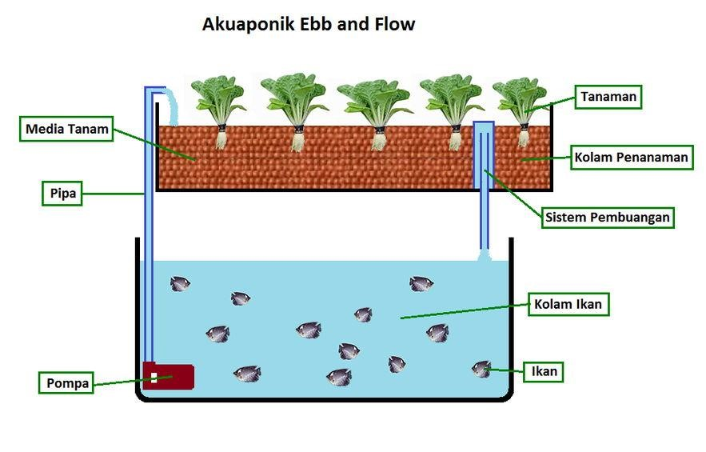
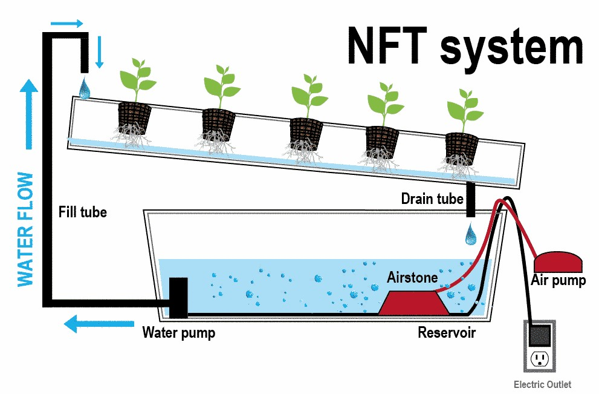
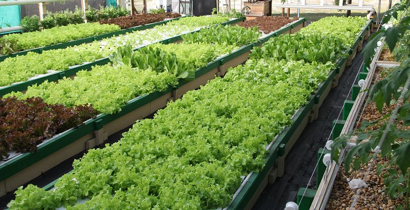
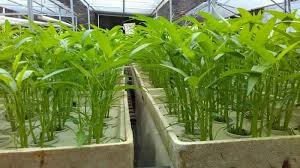
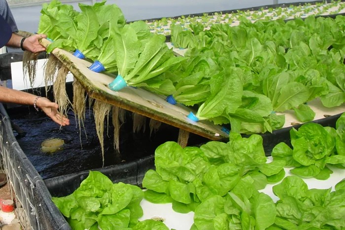
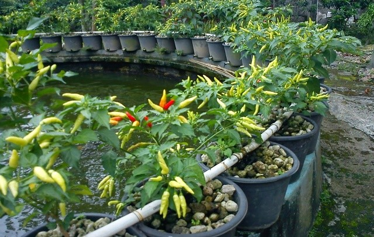

AQUAPONIK
Dalam budidaya aquaponik terdapat simbiosis mutualisme dimana tanaman mendapatkan sumber makanan dari limbah kotoran ikan. Sementara ikan mendapatkan air dengan kadar oksigen tinggi sebagai tempat hidupnya setelah dimurnikan oleh tanaman.
Jika dijabarkan lagi, siklus budidaya aquaponik adalah sisa pakan yang dihasilkan ikan dalam bentuk feses yang terakumulasi dengan kandungan nitrat dan amonia. Kandungan tersebut bersifat toksik atau beracun bagi ikan, namun kaya akan nutrisi untuk dijadikan sumber hara bagi tanaman. Pada saat nitrat telah terserap oleh tanaman sebagai bahan makanan, di waktu yang sama tanaman menyuling air dari bahan berbahaya yang kemudian kembali ke kolam ikan. Kemudian didaur ulang ke tangki ikan. Tanaman mendapatkan nutrisi yang mereka butuhkan dan ikan mendapatkan kualitas air yang sehat.
Prinsip kerja aquaponic adalah mengalirkan air kolam ke dalam talang-talang air yang sudah dilengkapi dengan media tanam serta bibit tanaman untuk proses pengolahan air kolam yang kemudian dialirkan kembali ke dalam kolam ikan.
Media tanam terdiri atas material, seperti agregat tanah liat, batu kerikil, dan serpihan karet busa. Media tanam yang seharusnya dipilih adalah yang berupa lembaran, tidak terdekomposisi, tidak merubah komposisi kimia dalam air, dan bebas dari potensi mengeluarkan senyawa toksik bagi tanaman serta bakteri nutritif. Media tanam yang digunakan dalam kegiatan ini berupa serpihan genting dan arang. Bibit tanaman yang bisa digunakan untuk aquaponic adalah tanaman-tanaman hortikultura, seperti sawi, selada, kangkung, seledri, tomat, dan cabai.
Metode-Metoe Aquaponik
1. Metode Deep Water Culture
Pada metode ini tanaman akan ditanam di styrofoam yang mengapung di permukaan growbeds berisi air. Pada sistem deep water culture air dari kolam ikan akan dipompa ke growbeds, kemudian diturunkan lagi ke kolam. Pada bagian growbeds, juga harus diberi lubang untuk sirkulasi udara agar akar tanaman tidak busuk.
Contoh Growbeds untuk Aquaponik
2. Metode Pasang Surut
Pada metode aquaponik pasang surut, air di kolam akan dipompa ke growbeds yang sudah terisi media tanam. Jika pada metode DWC tanaman akan dibuat mengapung dengan menggunakan styrofoam, pada metode ini, tanaman akan ditanam dengan memanfaatkan kerikil, pecahan batu split, genteng, hidroton atau pasir. Metode ini dikatakan pasang surut karena memanfaatkan 3 area dalam growbeds, yaitu:
- Area dalam growbeds yang berada paling bawah merupakan area yang selalu dialiri air
- Area tengah hanya akan dialiri air jika air di dalam growbeds sedang pasang
- Area atas yaitu area yang agak basah. Area ini tidak dialiri oleh air karena air yang meresap ke atas berasal dari kapilaritas.
3. Metode Nutrient Film Technique
Metode ini mirip seperti pengairan oksigen di dalam aquarium. Pada metode ini air akan terus menerus dipompa ke kolam ikan melewati filter mekanis dan biologis untuk menyaring sumbatan / kotoran yang akan menghambat pertumbuhan akar. Pada sistem ini tanaman disusun agak miring agar air lebih mudah mengalir dengan lebih mudah.
Jenis Tanaman Budidaya Aquaponik
1. Selada (Lactuca sativa)
Tanaman selada termasuk tanaman yang mudah tumbuh sehingga sangat cocok ditanam dengan budidaya aquaponik. Untuk menanam selada Anda bisa menggunakan sistem aquaponik NFT, rakit apung, dan pasang surut. Hasil selada yang ditanam dengan budidaya aquaponik dapat tumbuh dengan baik dan memiliki rasa yang renyah. Tanaman tidak mudah layu dan perawatannya juga gampang.
2. Tomat (Solanum lycopersicum)
naman tomat merupakan jenis tanaman yang tidak terlalu suka dengan air yang menggenang tetapi membutuhkan air yang cukup. Untuk menanam tomat dapat menggunakan sistem pasang surut atau sistem tetes (aliran kecil yang ditempatkan di dekat tanaman). Tomat memang mudah dibudidayakan tetapi Anda perlu sedikit waspada apabila ada hama seperti ulat atau lalat buah. Hasil tomat yang ditanam dengan budidaya aquaponik relatif lebih cepat tumbuh dan memiliki buah yang tidak mudah busuk.
3. Kangkung (lpomoea aquatica)
Tanaman kangkung merupakan jenis tamanan yang senang dengan air yang banyak. Ada dua jenis kangkung yaitu kangkung air dan kangkung darat, kedua-duanya dapat ditanam dengan budidaya aquaponik. Kangkung dapat ditanam dan tumbuh dengan baik di sistem aquaponik rakit apung, NFT, dan pasang surut. Kangkung tetap dapat tumbuh meskipun berada di tempat yang kurang subur. Perawatan kangkung sangat mudah dan cepat pertumbuhannya sehingga akan lebih cepat panen. Hama yang sering menghinggapi tanaman kangkung adalah ulat, jamur, dan bakteri pembusuk batang.
4. Sawi (Brassica chinensis var.parachinensis)
Tanaman sawi akan tumbuh baik meskipun tergenang di air jadi sangat cocok dengan budidaya aquaponik. Sawi memiliki jenis yang sangat banyak tetapi pada dasarnya semua jenis dapat ditanam dengan cara aquaponik dan dapat tumbuh secara baik. Perawatan sawi mudah, hama yang sering menghinggapi berupa ulat. Sawi yang ditaman dengan cara aquaponik akan lebih tahan lama dan lebih renyah.
5. Cabe (Capsicum frutescens)
Tanaman cabe tergolong tanaman yang tidak menyukai air jadi apabila terkena air terlau banyak atau menggenang akan mudah mati tetapi membutuhkan cukup air. Ada banyak jenis cabe seperti cabe rawit, cabe kriting, cabe besar dan lain-lain. Cabe cocok ditanam menggunakan budidaya aquaponik yang tidak terlalu banyak menampung air seperti pasang surut dan tetes. Untuk merawat cabe sebenarnya susah susah gampang, cabe sangat sensitif terhadap perugahan cuaca ekstrem seperti pada musim penghujan bunga cabe mudah rontok dan cabe lebih mudah terkena hama. Hasil cabe akan melimpah pada saat cuaca sedikit panas dan cukup air.
6. Bayam (Amaranthus)
Tanaman bayam sangat mudah tumbuh di dalam budidaya aquaponik karena kebutuhan nutrisi bayam dapat terpenuhi dengan baik. Hama yang sering menghinggapi biasanya berupa ulat daun. Selain tanaman yang sudah disebutkan sebenarnya masih banyak lagi tanaman yang dapat tumbuh dengan baik di dalam sistem aquaponik seperti sledri, kemagi, pakcoy, siwak, bawang putih, basil dan masih banyak tanaman yang lainnya.
Jenis Ikan Budidaya Aquaponik
1. Nila (Oreochromis niloticus)
Ikan nila saat ini adalah ikan makanan yang paling populer dan mudah dibesarkan. Nila mencapai ukuran panen dengan cepat dan akan mentolerir tingkat pH dan suhu air yang lebih tinggi (60 sampai 75 derajat C) daripada kebanyakan ikan tawar lainnya. Nila omnivora dan biasanya tidak akan mengganggu atau memakan saudara mereka yang lebih kecil. Kelezatan daging dan rasa ringan mereka membuat mereka populer di kalangan pecinta ikan tawar.
2. Lele (Clarias)
Ini adalah ikan air tawar terkemuka yang diperdagangkan secara komersial. Ikan ini tangguh, cocok untuk kondisi air hangat hingga 80 derajat, dan tahan terhadap banyak penyakit serta parasit yang bisa muncul di tangki aquaponik. Karena ikan lele mengendap di dasar tangki, mereka biasanya terangkat pada tingkat kerapatan kurang dari yang direkomendasikan.
3. Patin (Pangasius)
Ikan patin tidak membutuhkan air mengalir untuk pertumbuhannya. Walaupun berjenis ikan nokturnal, patin cukup responsif terhadap pemberian pakan buatan berupa pelet. Di alam liar, patin dapat mencapai panjang dua meter. Patin telah teruji dapat menjadi pasokan pupuk organik bagi tanaman dengan teknik akuaponik. Tekstur dagingnya lembut dan sedikit duri. Kelezatan daging patin yang berwarna putih ini telah menjadi favorit dalam bisnis kuliner. Harga jual patin cenderung tinggi dan waktu pembudidayaannya tidak lama.
4. Ikan Gurameh (Osphronemus goramy)
Ikan ini merupakan salah satu ikan yang telah banyak dibudidayakan masyarakat Indonesia. Gurameh menyukai perairan yang tidak terlalu dalam dan aliran airnya tidak deras. Pemeliharaan gurami relatif mudah dan teknologi pembudidayaannya telah berkembang pesat. Ikan ini juga dikenal sebagai ikan yang tidak rewel soal pakan karena termasuk jenis omnivora.Tekstur dagingnya yang padat dan gurih membuat ikan menjadi menu favorit di restoran atau rumah makan. Harga jual gurami relatif stabil di antara ikan air tawar lainnya.